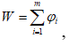

Решение простейших задач методом динамического программирования
1.1 Научиться решать задачи нелинейного программирования, используя метод множителей Лагранжа и графический метод.
2 Литература:
2.1 Гетманчук А. В. Экономико-математические методы и модели : учеб. пособие для бакалавров / А. В. Гетманчук, М. М. Ермилов. - М. : Издательско-торговая корпорация «Дашков и Ко», 2015. - 188 с. - Электронное издание. - Режим доступа: http://ibooks.ru.
3 Теоретические сведения:
Динамическое программирование - это метод оптимизации многошаговых, многоэтапных или многостадийных процессов, критерий эффективности которых обладает свойством  где W - показатель эффективности задачи в целом, φi - показатель эффективности на каждом отдельном этапе, .
Данные процессы управляемы и от правильного выбора управления зависит величина выигрыша.
Величина xi от которого зависит выигрыш на каждом шаге и, следовательно, в конечном счете, называется шаговым управлением.
Управление процессом в целом Х - это последовательность шаговых управлений Х = (х 1…хт).
Оптимальным управлением х - называется значение управления х, при котором значение W(x) принимает максимальное (минимальное) значение.
В основе метода динамического программирования лежит принцип оптимальности Беллмана: “управление на каждом шаге нужно выбирать так, что бы оптимальной была сумма выигрышей на всех оставшихся до конца процессах шагах, включая выигрыш на данном шаге”.
Таким образом, при выборе управления на данном шаге необходимо учитывать возможные варианты окончания предыдущего шага. Это достигается тем, что условие оптимизации проводится от конца процесса к началу. Сперва оптимизируют последний m-ый шаг, на котором не надо учитывать возможные воздействия выбранного управления х m на все последующие шаги, так как данные шаги отсутствуют, делая предположение об исходах m - 1-го шага и так далее до первого шага. На первом шаге, как правило, условные предположения не делаются, так как состояние системы перед первым шагом обычно известно.
Основная идея метода Беллмана состоит в следующем:
1 Задача поиска оптимального пути начинает решаться с конца.
2 Исходная задача погружается в множество аналогичных задач с различными начальными вершинами и одной и той же конечной вершиной.
При этом предполагается, что в качестве начальной вершины последовательно выступают все без исключения вершины графа. Таким образом, в методе Беллмана в каждый момент времени оптимизируется «хвост».
4 Задание:
4.1 Фирма строит здание с привлечением субподрядчиков:
[t0-t1] - нулевой цикл и возведение фундамента
[t1-t2] - возведение стен
[t2-t3] - возведение кровли
[t3-t4] - внутренние и отделочные работы
Требуется построить здание с минимальной стоимостью.
Требуется определить путь из начальной вершины в конечную, содержащий минимальный суммарный вес ребер (Рисунок 6.1).

Рисунок 6.1
5 Содержание отчета:
5.1 Наименование и цель работы.
5.2 Выполненное задание.
6 Контрольные вопросы:
6.1 Какой вид имеет граф, называемый деревом решений, для условий определенности?
6.2 В чем заключается суть метода динамического программирования Беллмана?